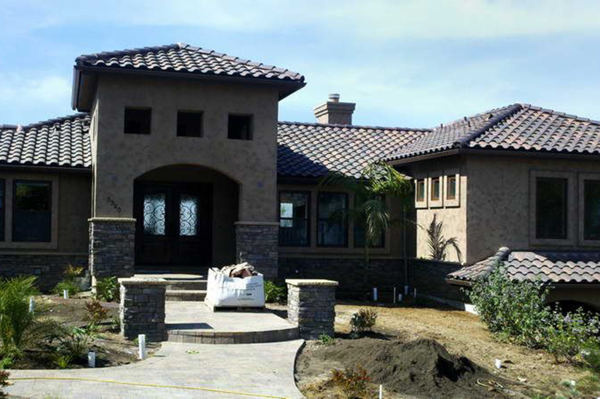
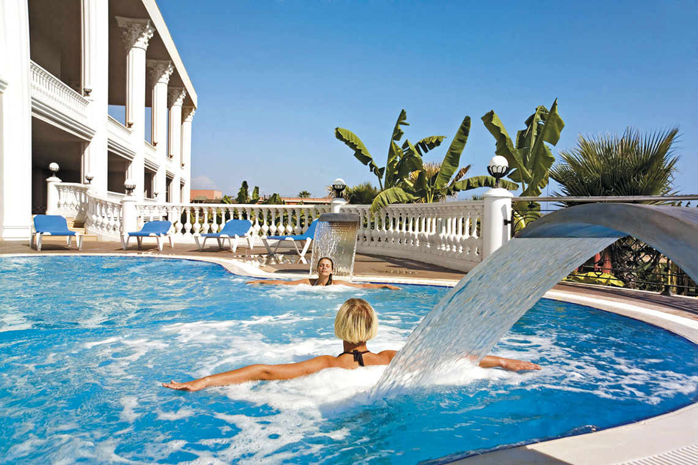
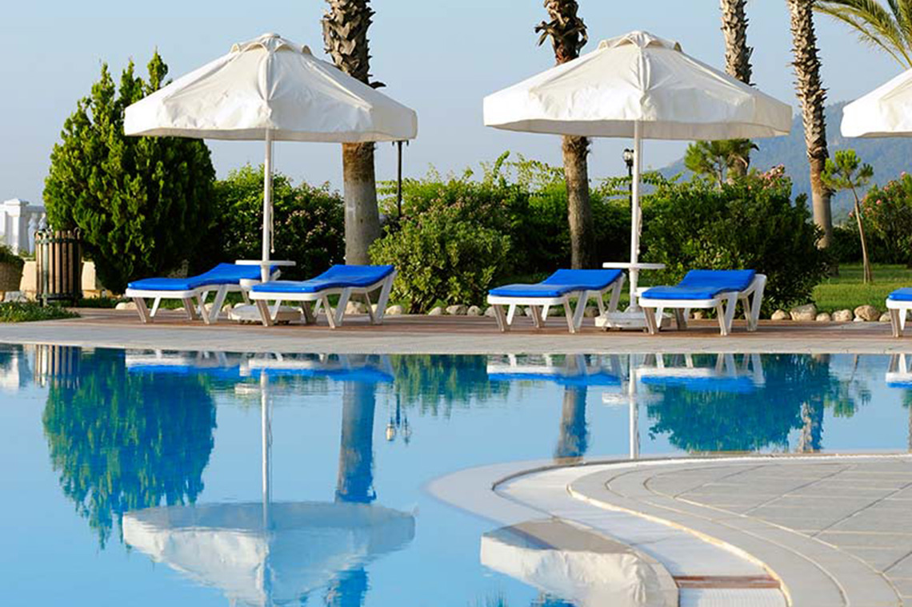

İnşaat Mühendisliği Açısından Deprem
İnşaat mühendisliği açısından deprem nedir? Depremin sismik olarak tanımı yapılacak olursa, yer kabuğunda beklenmedik bir anda ortaya çıkan enerjinin kendisine ait karakteristik özellikleri bulunan sismik dalgalar aracılığıyla yer yüzünü sarsması, büyüklüğü oranında hareket ettirmeye çalışması olayıdır.



Antalya’da Emlak Yatırımı yapmak için çok farklı nedenlerin yanı sıra en önemli nedenlerin başında iklimi
ve buna bağlı olarak muhteşem doğası gelmektedir. Türkiye genelinde emlak sektörünün son yıllarda en hızlı gelişen
illerinden biri olan Antalya, yabancı ve yerli yatırımcıların konut satışında en çok tercih ettiği il olan İstanbul’dan
sonra 2.nci sıradadır. Bunun yanı sıra Antalya’nın turizm potansiyelindeki artış ve buna bağlı olarak Antalya’ya yerleşen insan sayısı ve istihdamın artması,
Antalya’daki emlak pazarının hareketlenmesini doğurmuştur. Balta İnşaat firması, Antalya’nın hem turizm hem de emlak sektörlerindeki artan potansiyelden
faydalanarak emlak ve gayrimenkul danışmanlık hizmetlerini de bünyesine dahil etmek suretiyle büyümesine devam etmiştir. Uzun yıllar ülkemizden 2.nci konut almak
isteyen yabancı uyrukluların Antalya ve çevresinde konut edinmesi konusunda danışmanlık ve emlak hizmetleri veren firmamız, yerli ve yabancı yatırımcıların hangi özelliklerde ve hangi fiyat aralıklarında konut edindikleri konusunda uzmanlaşmıştır.
İnşaat Firması olarak Antalya, Konyaaltı, Muratpaşa, Döşemealtı, Kemer, Alanya, Belek ve çevresinde üretmiş olduğumuz projeler, satılık daireler, villa ve emlak yatırımlarını hayata geçirirken, her bütçe ve kullanıma uygun, çevre ile uyumlu,
modern inşaat tekniklerine göre inşa edilmelerini her zaman ön plana aldık.
İnşaat Mühendisliği Açısından Deprem
İnşaat mühendisliği açısından deprem ele alınacak olursa, halk nezdinde deprem dışarıdan yapılara gelen kuvvet olarak algılanır. Yani sismik bir yer hareketi(deprem) söz konusu olduğunda, sanki bir el yapıyı hareket ettirmeye, itmeye (push over=statik itme), sallamaya çalışıyormuş gibi algılanır. Aslında bu yanlış bir algıdır.